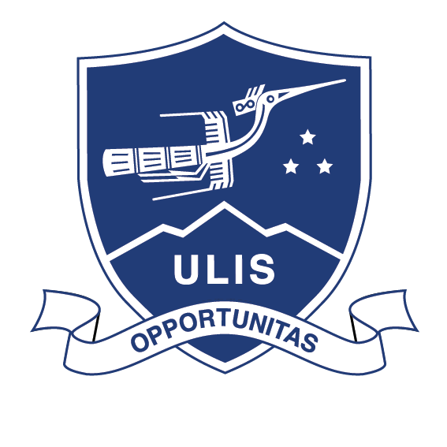
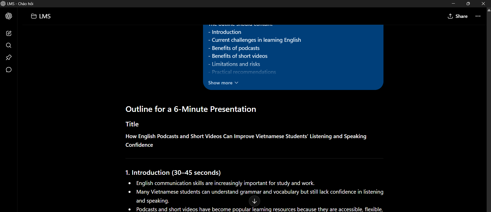
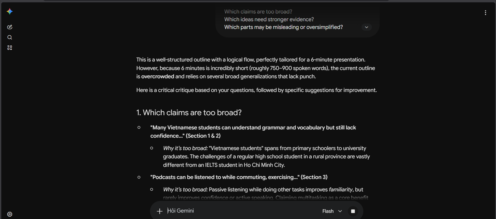
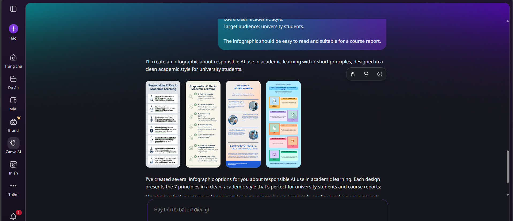
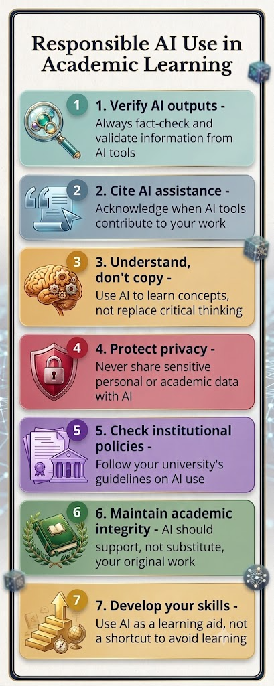

ĐẠI HỌC QUỐC GIA HÀ NỘI
TRƯỜNG ĐẠI HỌC NGOẠI NGỮ

BÁO CÁO CÁ NHÂN
SỬ DỤNG AI CÓ TRÁCH NHIỆM
VÀ ĐẠO ĐỨC TRONG HỌC TẬP, NGHIÊN CỨU
| Sinh viên | Hoàng Chu Mỹ Anh |
|---|---|
| Ngành | Ngôn ngữ Anh |
| Khoa | Ngôn ngữ và Văn hóa Anh |
| Trường | Trường Đại học Ngoại ngữ - ĐHQGHN |
| Mã sinh viên | 25040391 |
| Lớp | VNU1001_E252058 |
Hà Nội, 2026.
1. Nghiên cứu chính sách và định hướng sử dụng AI trong học tập
Qua các tài liệu công khai của Đại học Quốc gia Hà Nội, có thể thấy việc sử dụng trí tuệ nhân tạo trong học tập không được nhìn nhận theo hướng cấm tuyệt đối. Từ khóa tuyển sinh năm 2025, ĐHQGHN triển khai học phần “Nhập môn công nghệ số và ứng dụng trí tuệ nhân tạo” (VNU1001) cho sinh viên chính quy, nhằm trang bị kiến thức nền tảng về công nghệ số, kỹ năng sử dụng công cụ AI, năng lực giải quyết vấn đề, đồng thời nhấn mạnh đạo đức số, liêm chính học thuật, an toàn thông tin và trách nhiệm khi ứng dụng AI.
Đối với sinh viên ngành Ngôn ngữ Anh, AI có thể hỗ trợ nhiều hoạt động học tập như tra cứu từ vựng, luyện viết, gợi ý dàn ý thuyết trình, kiểm tra lỗi diễn đạt, so sánh sắc thái từ ngữ và luyện phản biện bằng tiếng Anh. Tuy nhiên, do đặc thù của học ngoại ngữ là phải tự hình thành năng lực diễn đạt, người học không nên để AI viết thay toàn bộ bài. AI chỉ nên được dùng như một công cụ hỗ trợ quá trình học, còn việc hiểu nội dung, lựa chọn ý, chỉnh sửa ngôn ngữ và chịu trách nhiệm với sản phẩm cuối cùng vẫn thuộc về sinh viên.
Quan điểm này cũng phù hợp với hướng dẫn của UNESCO về AI tạo sinh trong giáo dục và nghiên cứu. UNESCO nhấn mạnh cần tiếp cận AI theo hướng lấy con người làm trung tâm, có chính sách rõ ràng, bảo vệ dữ liệu và phát triển năng lực sử dụng AI một cách có trách nhiệm [2]. Vì vậy, trong môi trường đại học, sử dụng AI không chỉ là vấn đề kỹ thuật mà còn là vấn đề về đạo đức học thuật, tính minh bạch và năng lực tự học.
2. Nhiệm vụ học tập thực hiện với sự hỗ trợ của AI
Nhiệm vụ được chọn là chuẩn bị nội dung cho một bài thuyết trình ngắn bằng tiếng Anh về chủ đề: “The role of English podcasts and short videos in improving students’ listening and speaking confidence”. Chủ đề này phù hợp với sinh viên Ngôn ngữ Anh vì liên quan trực tiếp đến kỹ năng nghe - nói, thói quen tự học ngoại ngữ và khả năng khai thác tài nguyên số trong quá trình học tập.
Trong nhiệm vụ này, AI được dùng để hỗ trợ lập dàn ý, gợi ý câu hỏi nghiên cứu, kiểm tra tính mạch lạc của luận điểm và đề xuất cách trình bày infographic. Tuy nhiên, sinh viên không sử dụng AI để nộp nguyên văn nội dung do máy tạo ra. Các phần chính đều được đọc lại, chỉnh sửa, bổ sung ví dụ cá nhân và đối chiếu với yêu cầu của học phần.
| Công cụ | Mục đích sử dụng | Cách kiểm soát |
|---|---|---|
| ChatGPT | Gợi ý dàn ý, câu hỏi nghiên cứu và bản nháp phần mở đầu cho bài thuyết trình. | Chỉ dùng làm khung tham khảo; tự viết lại bằng ngôn ngữ của bản thân. |
| Google Gemini | Yêu cầu phản biện dàn ý, chỉ ra luận điểm còn chung chung hoặc thiếu dẫn chứng. | So sánh với bản nháp ban đầu để chỉnh sửa, không xem đầu ra AI là kết luận cuối cùng. |
| Canva AI | Gợi ý bố cục infographic về sử dụng AI có trách nhiệm trong học thuật. | Chỉ dùng cho bố cục trực quan; nội dung nguyên tắc do sinh viên chọn lọc và viết lại. |
3. Tuyên bố minh bạch về việc sử dụng AI
Trong bài báo cáo này, AI được sử dụng ở các bước hỗ trợ học tập gồm: xây dựng dàn ý, gợi ý cách diễn đạt, phản biện luận điểm và đề xuất bố cục infographic. Tôi không sử dụng AI để thay thế toàn bộ quá trình làm bài, không nộp nguyên văn nội dung do AI tạo ra và không dùng AI để tạo nguồn trích dẫn giả. Các thông tin liên quan đến chính sách, đạo đức học thuật và nguyên tắc sử dụng AI đều được kiểm tra lại bằng nguồn có thể truy xuất.
Cách làm này phù hợp với hướng dẫn của Monash University: khi AI được phép sử dụng trong bài đánh giá, sinh viên cần ghi rõ công cụ đã dùng, mục đích sử dụng, mức độ đóng góp của AI và cách đầu ra được điều chỉnh hoặc phát triển thêm [3]. Việc công khai quá trình sử dụng AI giúp bài làm minh bạch hơn và giúp người học ý thức rõ trách nhiệm của mình đối với sản phẩm cuối cùng.
4. Quá trình sử dụng AI: prompt, đầu ra và chỉnh sửa
| Bước | Prompt đã dùng | Đầu ra AI | Cách đánh giá và tích hợp |
|---|---|---|---|
| Bước 1 | “Suggest an outline for a 6-minute presentation on how English podcasts and short videos can improve Vietnamese students’ listening and speaking confidence.” | AI đề xuất các phần: bối cảnh học tiếng Anh, lợi ích của podcast/video ngắn, hạn chế, ví dụ học tập và kết luận. | Giữ cấu trúc chung nhưng rút gọn còn 5 phần để phù hợp thời lượng thuyết trình. |
| Bước 2 | “Give me three research questions for this topic, but make them suitable for an English major student.” | AI gợi ý câu hỏi về động lực học, kỹ năng nghe và sự tự tin khi nói. | Chọn một câu hỏi chính, chỉnh lại theo hướng gần với trải nghiệm học tập của sinh viên. |
| Bước 3 | “Criticize this outline. Which claims are too broad or need more evidence?” | AI chỉ ra rằng không nên khẳng định video ngắn luôn cải thiện khả năng nói, vì hiệu quả còn phụ thuộc vào cách học. | Sửa luận điểm thành: tài nguyên số có thể hỗ trợ, nhưng cần phương pháp học chủ động và luyện tập thường xuyên. |
| Bước 4 | “Suggest an infographic with 7 principles for responsible AI use in academic work.” | AI đề xuất các nguyên tắc như minh bạch, kiểm chứng, không đạo văn, bảo vệ dữ liệu. | Chọn 7 nguyên tắc thực tế nhất, viết lại bằng tiếng Việt ngắn gọn để đưa vào báo cáo. |
5. Minh chứng quá trình thực hiện
Thay vì chỉ ghi kết quả cuối cùng, quá trình sử dụng AI được lưu lại theo từng bước để chứng minh rằng AI chỉ đóng vai trò hỗ trợ. Các prompt được ghi lại trong bảng trên, đầu ra của AI được đọc lại và chỉnh sửa, còn phần nội dung cuối cùng được viết theo cách hiểu của người học.

Ảnh 1: Prompt yêu cầu ChatGPT gợi ý dàn ý bài thuyết trình.

Ảnh 2: Prompt yêu cầu Gemini phản biện dàn ý và chỉ ra điểm còn thiếu.

Ảnh 3: Gợi ý bố cục infographic trên Canva AI.

Ảnh 4: Bản chỉnh sửa cuối cùng sau khi sinh viên tự chọn lọc và viết lại.
Qua quá trình này, AI giúp tiết kiệm thời gian ở giai đoạn hình thành ý tưởng, nhưng không thể thay thế hoàn toàn vai trò của người học. Nếu dùng AI một cách thụ động, bài làm dễ trở nên chung chung và thiếu dấu ấn cá nhân. Vì vậy, bước quan trọng nhất là đọc lại, kiểm tra, sửa ngôn ngữ và liên hệ với yêu cầu cụ thể của môn học.
6. Phân tích các vấn đề đạo đức khi sử dụng AI trong học thuật
6.1. Ranh giới giữa hỗ trợ hợp lý và gian lận học thuật
Hỗ trợ hợp lý là dùng AI để gợi ý hướng tiếp cận, giải thích khái niệm khó, kiểm tra lỗi diễn đạt, gợi ý cấu trúc hoặc giúp người học nhìn ra điểm yếu trong bản nháp. Trong trường hợp này, người học vẫn phải hiểu nội dung, tự quyết định luận điểm và tự chịu trách nhiệm với bài nộp. Ngược lại, gian lận học thuật xảy ra khi sinh viên để AI viết thay phần lớn bài làm, nộp nguyên văn đầu ra AI như sản phẩm cá nhân hoặc dùng AI để che giấu việc không thực hiện nhiệm vụ học tập.
Đối với sinh viên Ngôn ngữ Anh, ranh giới này đặc biệt quan trọng. Nếu AI viết thay bài luận hoặc bài thuyết trình, sinh viên có thể có sản phẩm trông hoàn chỉnh nhưng lại không thật sự phát triển kỹ năng viết, nói và tư duy phản biện. Vì vậy, AI nên được dùng như bạn học hỗ trợ đặt câu hỏi, chứ không phải như người làm bài thay.
6.2. Quyền sở hữu trí tuệ, trích dẫn và minh bạch
Một vấn đề đạo đức khác là quyền sở hữu trí tuệ và việc trích dẫn. AI có thể tổng hợp thông tin từ nhiều nguồn nhưng không phải lúc nào cũng chỉ ra nguồn gốc chính xác. Nếu sinh viên dùng đầu ra AI mà không kiểm tra, bài làm có thể chứa thông tin sai, trích dẫn không tồn tại hoặc diễn đạt quá giống các nguồn khác. Do đó, với các thông tin học thuật, sinh viên cần đối chiếu bằng tài liệu chính thức, bài báo, giáo trình hoặc văn bản đáng tin cậy.
Monash University nhấn mạnh người học cần lưu lại cách mình dùng AI, ghi rõ công cụ và mức độ sử dụng, đồng thời giải thích cách đầu ra được điều chỉnh [4]. Điều này cho thấy minh bạch không chỉ là ghi một câu “có dùng AI”, mà còn phải mô tả rõ AI đã tham gia vào giai đoạn nào của quá trình làm bài.
6.3. Tác động đến quá trình học tập và phát triển kỹ năng
AI có thể hỗ trợ sinh viên ngoại ngữ học nhanh hơn: tạo ví dụ câu, gợi ý từ vựng theo ngữ cảnh, sửa lỗi ngữ pháp, luyện phản hồi hội thoại và giúp người học so sánh nhiều cách diễn đạt. Tuy nhiên, nếu dùng quá nhiều, sinh viên có thể giảm khả năng tự đọc tài liệu, tự viết bản nháp và tự phát hiện lỗi. Khi đó, AI không còn là công cụ hỗ trợ mà trở thành yếu tố làm suy yếu quá trình học.
Vì vậy, cách sử dụng phù hợp là để AI tham gia sau khi người học đã có ý tưởng ban đầu. Người học nên tự viết trước, sau đó dùng AI để kiểm tra độ rõ ràng, tìm điểm yếu hoặc gợi ý cách cải thiện. Cách làm này vừa tận dụng được công nghệ, vừa giữ được vai trò chủ động của sinh viên.
7. Bộ nguyên tắc cá nhân khi sử dụng AI trong học tập
1. Chỉ sử dụng AI khi đề bài cho phép hoặc không cấm; nếu chưa rõ, cần hỏi lại giảng viên.
2. Luôn ghi rõ công cụ AI đã dùng, mục đích dùng và mức độ ảnh hưởng đến bài làm.
3. Không nộp nguyên văn đầu ra AI; mọi nội dung phải được đọc lại, chỉnh sửa và viết bằng hiểu biết của bản thân.
4. Không đưa dữ liệu cá nhân, bài làm riêng tư hoặc tài liệu chưa được phép công khai vào công cụ AI.
5. Không dùng AI để tạo nguồn giả, trích dẫn giả hoặc làm sai lệch thông tin học thuật.
6. Luôn kiểm chứng thông tin quan trọng bằng nguồn chính thức, tài liệu học thuật hoặc hướng dẫn của môn học.
7. Dùng AI để học sâu hơn, không dùng AI để né tránh quá trình tư duy, luyện tập và chịu trách nhiệm cá nhân.
8. Infographic: Sử dụng AI có trách nhiệm trong học thuật
Infographic dưới đây tóm tắt 7 nguyên tắc cá nhân khi sử dụng AI trong học tập. Nội dung được trình bày theo hướng ngắn gọn, dễ nhớ và phù hợp để đưa vào slide thuyết trình hoặc nộp kèm báo cáo.
| 1. HỎI ĐÚNG Đặt prompt rõ mục tiêu, không yêu cầu AI làm thay toàn bộ bài. |
2. KIỂM CHỨNG Đối chiếu thông tin quan trọng với tài liệu chính thức hoặc nguồn học thuật. |
|---|---|
| 3. VIẾT LẠI Biến gợi ý của AI thành sản phẩm của mình bằng tư duy và chỉnh sửa. |
4. GHI NHẬN Công khai công cụ AI đã dùng, mục đích dùng và mức độ ảnh hưởng. |
| 5. TÔN TRỌNG NGUỒN Không tạo trích dẫn giả, không sao chép nội dung không rõ quyền sử dụng. |
6. BẢO VỆ DỮ LIỆU Không nhập thông tin cá nhân, tài liệu riêng tư hoặc dữ liệu nhạy cảm. |
| 7. GIỮ TƯ DUY ĐỘC LẬP Dùng AI để học sâu hơn, không để AI thay thế năng lực học tập. |
THÔNG ĐIỆP AI là công cụ hỗ trợ; trách nhiệm học thuật vẫn thuộc về người học. |
9. Kết luận
AI tạo sinh là công cụ hữu ích đối với sinh viên Ngôn ngữ Anh, đặc biệt trong việc luyện diễn đạt, xây dựng dàn ý, kiểm tra lỗi ngôn ngữ và thiết kế sản phẩm học tập. Tuy nhiên, giá trị học thuật của bài làm chỉ được đảm bảo khi người học sử dụng AI một cách minh bạch, có kiểm chứng và có đóng góp cá nhân rõ ràng.
Sau bài tập này, tôi nhận thấy kỹ năng quan trọng nhất không phải là hỏi AI càng nhiều càng tốt, mà là biết đặt câu hỏi đúng, biết nghi ngờ đầu ra, biết tự chỉnh sửa bằng hiểu biết của mình và biết chịu trách nhiệm với sản phẩm cuối cùng. Khi được sử dụng đúng cách, AI có thể giúp việc học tiếng Anh trở nên chủ động hơn, nhưng không thể thay thế sự luyện tập, tư duy phản biện và thái độ trung thực của người học.
10. Tài liệu tham khảo
[1] Đại học Quốc gia Hà Nội. (2025). “Sinh viên ĐHQGHN sẽ học AI và công nghệ số từ năm nhất”. vnu.edu.vn.
[2] UNESCO. (2023, cập nhật 2026). “Guidance for generative AI in education and research”. unesco.org.
[3] Monash University. (2026). “Acknowledging the use of AI”. Student Academic Success.
[4] Monash University. (2026). “AI and assessments”. Student Academic Success.
[5] Đại học Quốc gia Hà Nội. (2025). “AI & Công nghệ số”. Bản tin ĐHQGHN số 403.